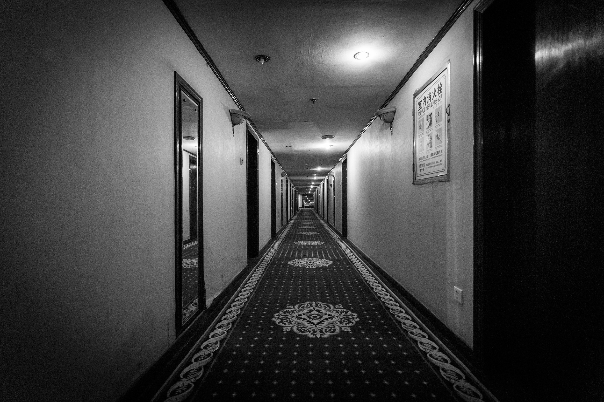

PSYCHOLOGICAL HORROR / INTERACTIVE NARRATIVE
The Cornerstone
A man trapped in the mysterious Cornerstone Hotel confronts a building that seems to know more about his past than he does.
← ALL PROJECTS
PROJECT OVERVIEW
At a glance
Role: Writer and creator. Narrative concept, story structure, scripted sequences, and exploration-focused gameplay ideas.
Status: In writing and conceptual development. No playable prototype or shipped game is claimed.
The story
The opening concept begins with David waking in Room 665. A grandfather clock strikes twelve and continues ticking even though its hands do not move. A sound draws him toward the hallway, where an elevator dings. The hotel gradually becomes a place where memory and physical space collide.
Creative approach
A planned opening progression introduces the room, hallway, lobby, and the hotel’s increasingly unreliable geography. These are narrative design intentions, not implemented gameplay.
Planned player experience
- Room 665: David wakes; the grandfather clock strikes twelve but its hands remain fixed.
- Hallway: A sound draws David out of the room; an elevator dings.
- Lobby: David seeks help from the receptionist and learns he cannot leave during the storm.
- Stairwell: When the elevator is unavailable, David takes the stairs and encounters a threatening presence.
- Second floor: David hides; the hotel begins to distort his sense of place and memory.
Conceptual narrative sequence only; not implemented gameplay or a finalized design document.
Writing samples
ON BLACK: We hear an engine roaring down a road. The winter wind is screaming in our ears. Tires screech then– BOOM. For a moment, it’s just the wind. The wind slowly gives way to heartbeat. Thump-thump. Thump. Thump-thump. The heartbeat begins to fade Thump-Thump tick. Thump. Tick. Tick. Tick INT. ROOM 665. NIGHT David’s eyes shoot open. Slowly rising out of bed, his attention is drawn to the ticking. A luxurious, golden grandfather clock sits in the corner of a not so luxurious hotel room. The room opens for David (the player) to explore until the leave the room. The door slowly opens. DAVID (Whispering loudly.) “H-hello. Is anyone there?” David completely steps out into the hallway. A dimly lit hotel hallway stretches impossibly far. Ding. An elevator door opens. The player is allowed to walk this impossibly looping hallway. Until they enter the elevator. David steps inside as the camera follows a path outside of the window, revealing the enormous scale of the this hotel shrouded by a monstrous storm. TITLE CARD: THE CORNERSTONE